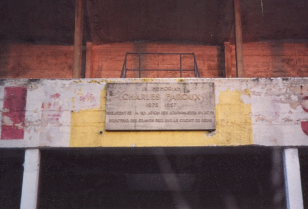

The Motorsport Memorial website
Motor Sport Monuments and Memorials - Reims, France
 |
|
| The Charles Faroux memorial plaque is located at the front of the small grandstand on the old start-finish straight of the Reims circuit in France. | |
| English Translation: | |
IN MEMORIAM |
IN MEMORIAM |
The Motorsport Memorial website